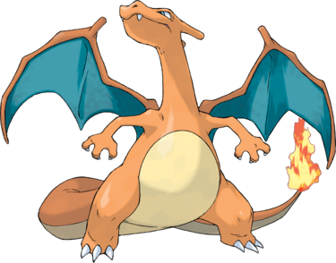

Dracaufeu est basé sur un dragon européen. Contrairement à ses pré-évolutions, il a deux ailes lui permettant de voler : l'intérieur des ailes est bleu alors que leur verso est orange. Son cou s'est développé, il est désormais plus long et deux crêtes ont poussé à l'arrière de son crâne. Ses membres supérieurs se sont atrophiés tandis que sa queue s'est allongée pour permettre à ce titan de garder une certaine stabilité au sol bien qu'il soit plus à l'aise dans les airs. Sa dentition, avec ses canines apparentes, révèle une préférence marquée pour la viande ; il possède trois griffes à chaque patte et a le ventre jaune pâle. Pokémon noble, il n'attaque pas les plus faibles que lui et cherche toujours des adversaires plus forts. Après un combat difficile ou s'il est en colère, sa flamme s'intensifie et devient blanc-bleu. Il crache des flammes pouvant faire fondre n'importe quoi et est souvent la cause d'incendies.